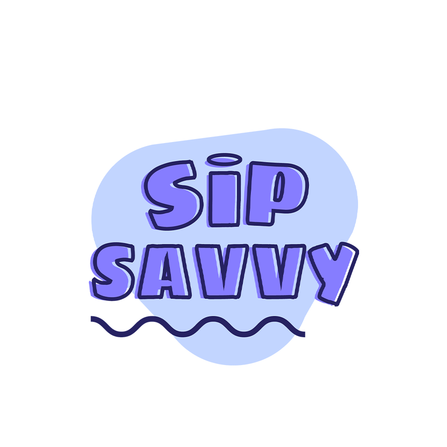
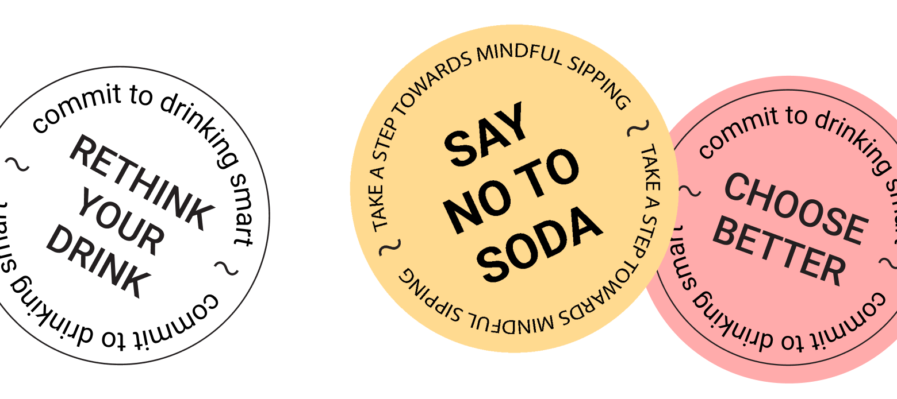

Let’s optimise your everyday potential with a wiser choice of sip!
Right choice of drink to hydrate is essential to maximise your everyday performance rate and each choice of every sip you make matters - Hydrate Smart!
Start Your Jouney!
Say No to Soda, Kick the Habit and Reclaim Your Health!
A step towards better hydration requires limiting your intake of soda and other sugary drinks as they dehydrate rather than quench your thirst - Rethink Your Choice of Sip!
The Bitter Truth - Uncover the Side Effects of Soda!
-
It is Dehydrating You
Despite being a beverage, soda can actually contribute to dehydration. The caffeine and sugar content in some sodas can have diuretic effects, increasing urine production and potentially leading to fluid loss.
-
Makes You at Risk of Chronic Disease
Soda consumption has been linked to an increased risk of various chronic diseases, including metabolic syndrome, non-alcoholic fatty liver disease, and certain types of cancer. The high sugar content and empty calories in soda can contribute to these health conditions over time.
-
Can be the cause of Your Obesity
Soda is high in added sugars and calories, which can contribute to weight gain and obesity. Regular consumption of sugary beverages can lead to an increased calorie intake without providing significant nutritional value.
-
It causes you Tooth Decay
The high sugar content in soda can promote tooth decay and cavities. Bacteria in the mouth feed on the sugars, producing acids that erode tooth enamel, leading to tooth decay and oral health problems.
-
It puts you at the Risk of Diabetes
Regular consumption of soda has been linked to an increased risk of developing type 2 diabetes. The excessive intake of added sugars can contribute to insulin resistance, impairing the body's ability to regulate blood sugar levels.
Youth consume sugar sweetened beverages once daily or more in the United States.
Soda is Addictive, and its' time to break-free from the Soda Trap!
When it comes to saying no to soda, it requires more than just willpower.
Recognise Signs of Soda Addiction
Diet Soda is Not A Better Option
It maybe low in sugar and calories, but it provides no nutritional value and can harm your teeth. Observational studies have also linked it to various other health conditions.
Learn more about it on uclahealth.org
It’s time to create Mindful Drinking Habit
Let’s become more mindful of each sip we take and make better choices of drink - Water is the Way!
- Consistent habit of drinking water, instead of waiting till you feel thirsty.
- Reduce the easy access to soda and other sugary drinks. Begin by avoiding purchasing them altogether.
- Avoid getting hungry; hunger drives cravings, including those for soda.
- Sugar cravings are common, so keep healthy options handy.
- Always carry a refillable water bottle!
Start Your Journey of Mindful Drinking
Let's commit to uplift our health beyond soda. Together, we can make a positive impact on our bodies and the environment. Let's stay hydrated and feel our best!
Signup with Sip Savvy to Elevate Your Journey towards Mindful Drinking:
- Weekly newsletter that motivates and reminds you to practice mindful drinking.
- 21-day planner, to start your journey on breaking and making better drinking habits.
- Chance to participate in activities that help you build habits to sip wisely and stay savvy.
About Us
Welcome to Sip Savvy, your online destination for embracing healthier hydration habits, with a special focus on combatting the widespread soda culture among young adults. Our mission is to shed light on the detrimental effects of sodas while encouraging mindful drinking choices.
Whether you're striving to quit soda or embrace mindful drinking, 'Sip Savvy' is here to provide unwavering support and motivation. We offer email subscription, to provide extended guidance and personalised assistance in building healthier habits.
Join us as we embark on this aware and positive habit building journey together.
Let's prioritise hydration, make mindful decisions, and embrace a healthier way of life.